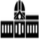

Popular Astronomy, Vol. XXXII, No. 1 January, 1924 Whole No. 311
Exercises formally dedicating the Irving Porter Church Memorial Telescope of the Fuertes Observatory of Cornell University were held on the evening of June 15, 1923. Brief addresses of presentation and acceptance by Dean Kimball and President Farrand preceded the address of the evening by Dr. Heber D. Curtis, Director of the Allegheny Observatory.
After the lecture by Dr. Curtis, the members of Professor Church's class and their friends were invited to the observatory to see the telescope and view Jupiter and Saturn and the Globular Cluster in Hercules through it. A goodly number availed themselves of the opportunity and were favored with clear skies and good "seeing." As there had been public nights at the observatory each Friday night since the Easter vacation it was deemed wise only to invite the members of the class of 1873 and their friends who came to Cornell for the celebration of their fifty year reunion, and attended the dedication exercises for the interest the occasion afforded and to do honor to their classmate who had made the occasion possible.
As just intimated, the initial impulse which has made possible the memorable occasion here recorded, an occasion which means so much to Cornell University, was given by Professor Church, Emeritus, in 1919 when he made arrangements to get for the Fuertes Observatory two discs of glass for a 12-inch objective which had been ordered from the Mantois Factory near Paris by the Yerkes Observatory. Owing to delays caused by the war, these were no longer of use to the Yerkes Observatory and so were released to Cornell University.
In March, 1919, the order was given to the John A. Brashear Co. to make these discs into a visual objective for a 12-inch equatorial for Cornell University. A little over a year later the completed objective was received by the treasurer and stored for safe keeping in the vault at the treasurer's office to be kept until such time as the necessary funds should become available for the purchase of the 12-inch equatorial mounting.
Professor Church now initiated and carried forward a movement to get contributions from Alumni of the College of Civil Engineering of Cornell University to complete a fund for the purchase of the mounting for the lens which his generosity had provided. The Cornell society of Civil Engineers gave a substantial contribution and by the fall of 1921, when the writer arrived to take charge of the work in Astronomy and Geodesy, a goodly sum had been raised, Professor Church himself contributing liberally to the project.
During the fall of 1921 the proposal of Director Barnes of the School of Civil Engineering to call the telescope the Irving Porter Church Memorial Telescope was, by common consent, approved and Alumni were appealed to again to complete the fund as a fine means of honoring one who has done so much for Cornell University, and whose interest in astronomy for its value in broadening, enlarging, and uplifting man's vision, is known to all who have the pleasure of his intimate acquaintance.
In December, 1921, owing to a happy coincidence, the firm of Warner and Swasey, through the kindly interest of Mr. E. P. Burrell, himself a Cornell graduate, and other members of the firm, was able to make the University a most generous offer for the construction of the equatorial mounting for the 12-inch lens, an offer so generous that, in spite of the fact that the full amount needed was not yet raised, the trustees gave the order for the mounting early in January, 1922. During the spring of 1922, Dean E. E. Haskell, Emeritus, who had already done much to bring the need of completing the fund for the purchase of the mounting to the attention of Alumni, came to the rescue, and through his kindly offices in further presenting the need, the fund was completed about the same time that the last payment to the Warner and Swasey Company came due. The total amount was contributed by about twenty-five alumni, all bur one whom were graduates of the College of Civil Engineering, and the one exception was a graduate of Sibley College. The contribution from the Cornell Society of Civil Engineers may be regarded as the sum of a large number of contributions from Civil Engineering graduates, the whole gift being a fine memorial to a much beloved teacher in the College of Civil Engineering.
The mounting was finished and ready for shipment in July, 1922, but, owing to repairs and improvements to be made on the building and dome of the Fuertes Observatory, it was not shipped until late in September and its erection in the dome was completed on October 16, 1922.
The telescope is provided with a photographic correcting lens and with two cameras, one for taking photographs at the principal focus and one for use with amplifying lenses. The focal length of the objective is 180 inches and the two amplifying lenses give equivalent focal lengths of 5 and 10 times as great.
The instrument is provided with the usual coarse circles for setting the hour angle and declination, and a disc on the N. face of the pedestal and driven by the clock makes it possible to set right ascensions direct, being read by a vernier to single minutes of right ascension. There are also fine circles, graduated on silver, for reading the declination and hour angle and reading to ten seconds of arc and one second of time respectively.
The pedestal rests on two pairs of 18-inch I-beams which are 30 feet long, the ends being built into the main walls of the central part of the building. To increase the stiffness of the I-beams the upper north and south pair are bolted and braced to the east and west pair at their centers, just under the pedestal.
Adjusting screws for the fine adjustment of the polar axis in altitude and azimuth are provided on the base of the pedestal.
A small bifilar micrometer, which was originally provided for the original 4-inch equatorial telescope of the observatory, has been fitted with an adapter which makes it possible to use it on the 12-inch until such time as funds become available to purchase a more suitable one.
A fine assortment of eye-pieces and a polarizing helioscope have been provided by the generosity of Director Barnes of the School of Civil Engineering and it is hoped that other generous Alumni will, before long, supply the necessary funds for the purchase of a spectrograph and perhaps later an objective prism.
Tests of the objective on double stars show that it readily resolves stars of approximately equal brightness which are one-half second apart and when the seeing is unusually good the writer has recognized even closer pairs as double. These and other tests have shown that the objective is up to the usual standard of excellence attained by Brashear lenses.
The driving clock, the worm and worm wheel, as well as the mounting generally, are up to the usual standard of incomparable excellence for which the work of Warner and Swasey has won such deserved distinction.
The addition of this fine equatorial to the very complete equipment for teaching geodetic astronomy marks a noteworthy epoch in the history of astronomy at Cornell University. 